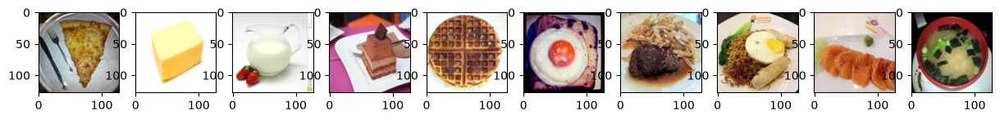

先說在前面：用 2026 年的眼光讀 2022 年的作業
這份作業出自 2022 年春季的課程。原版是一份在 Google Colab 上執行的筆記本（notebook），本 repo 把它拆成五個 .py 檔，並在 2026 年用當下的套件版本重新跑過一遍。四年之間有些東西變了，有些東西乾脆消失了。動手之前先把話講清楚，分四個層次看。
第一層：環境與 API——已經過時，本 repo 已修到能跑
原版用 Colab 的雲端硬碟存檔、用 !gdown 下載資料與模型、用 !pip install 裝套件。這些 Colab 專屬的寫法在本機都用不上，所以全部拿掉，改成在 HW09/ 資料夾裡直接讀 checkpoint.pth 與 food/。其餘的改動整理如下：
| 原版 notebook（2022） | 本 repo（2026） | 為什麼要改 |
|---|---|---|
lime==0.1.1.37（投影片第 7 頁指定）、transformers==4.5.0 | lime==0.2.0.1、transformers==5.18.0 | transformers==4.5.0 在 Python 3.12 裝不起來（它依賴的 tokenizers 0.10.3 編譯失敗）；舊版 lime 其實還裝得起來、跑出的結果也相同，本 repo 統一改用目前的版本。版本都 pin 在 requirements.txt |
from torch.autograd import Variable，用 Variable(...) 包住 tensor | 直接對 tensor 呼叫 requires_grad_() | PyTorch 0.4（2018）起 tensor 本身就能追蹤梯度，Variable 只剩相容用的空殼 |
x.grad.data、.data.numpy() | .detach() | .data 會繞過自動微分的檢查，現在建議用 .detach() |
torch.FloatTensor(1, n).zero_().cuda() | torch.zeros(1, n).cuda() | 同一件事，新寫法一步到位 |
plt.show() 把圖畫在 notebook 裡 | matplotlib.use('Agg') + fig.savefig('output/…png') | 腳本沒有 notebook 可以顯示，圖一律存成檔案 |
| notebook 自動顯示最後一行的值 | 明確寫 print(model.load_state_dict(...)) | 腳本不會自動顯示，要自己印 |
| 一份 notebook | model.py、dataset.py、explain_cnn.py、bert_hidden_states.py、bert_embedding.py | 一個檔案只做一件事，比較好對照 |
還有一件事要先知道：explain_cnn.py 把模型和資料寫死成 .cuda()，所以 Part 1 需要一張 NVIDIA 顯示卡才跑得起來；兩支 BERT 腳本則在 CPU 上算。這是本 repo 刻意的寫法，第 0 章會說明執行環境。
第二層：外部資源——有些已經不在了
這一層比較麻煩，因為不是改幾行程式就能解決：
- 助教的
hw9_bert.zip已經下架。這個壓縮檔原本放著 Q25–27 要用的 tokenizer（把文字切成 token 的工具）與預先算好的 BERT hidden states（隱藏狀態，也就是 BERT 每一層的輸出向量）。它放在 Google Drive 上，2026-10-03 用兩個下載網址去抓都回 HTTP 404。本 repo 的bert_hidden_states.py改成：資料夾裡有hw9_bert/就照原版用；沒有的話，改用 Hugging Face（一個公開分享模型的網站，transformers套件也是他們做的）上的deepset/bert-base-cased-squad2自己算。這是一個 12 層的標準尺寸 BERT（BERT-base），在 SQuAD 2.0 問答資料集上再訓練過（微調），專門做「從一段文章裡找出問題的答案」。 - exBERT 網站連不上。Q21–24 要在瀏覽器裡用 exBERT 這個網站觀察 BERT 的 attention（每個 token 在計算時「參考」了哪些其他 token，以及參考的比重）。2026-10-03 實測
exbert.net連線逾時；投影片第 14 頁給的替代網址huggingface.co/exbert/會轉到 Hugging Face 上的一個 Space（Hugging Face 用來放網頁小程式的地方；網址存在，但那個 Space 現在能不能正常使用沒有檢查）。 - 中文字型換掉了。原版下載「台北思源黑體」來畫中文；本 repo 改用系統內建的 Droid Sans Fallback（第 7 章細說）。
Q25–27 沒有標準答案
換了模型，畫出來的圖就和投影片、和當年的作業不一樣。助教當年用的是哪一個模型無從得知，原作業列了 BERT 回答問題的四個步驟（例如「把意思相近的字聚在一起」「把問題和文章裡相關的資訊對上」「抽出答案」），要你從圖上判斷哪幾層在做哪一步；這類題目用本 repo 的圖沒有標準答案可以對。第 6 章會照實描述這個模型的圖長什麼樣，但不會假裝那是作業的答案。
第三層：方法——範例程式和論文有出入
這一層最值得知道，而且它不是 2026 年才出現的問題：原版 notebook 本來就這樣寫，本 repo 照原樣保留，本書負責把它講清楚。舉兩個例子：
- SmoothGrad 要在圖片上加雜訊。論文的雜訊標準差是「0.4 × 像素值的範圍」，程式寫成「(0.4 ÷ 範圍)²」。這 10 張圖的像素值範圍都接近 0 到 1，代進去之後，實際加的雜訊大約只有論文的 40%（第 3 章）。
- Integrated Gradients 讓圖片從一張全黑的「基準圖」一步步變亮到原圖，沿途把梯度累加起來。論文的公式最後還要乘上「原圖減掉基準圖」，程式少乘了這一項，所以畫出來的其實只是「沿途梯度的平均」，失去了這個方法最重要的性質：每個像素分到的功勞加起來，應該剛好等於「原圖的分數減掉全黑圖的分數」（第 5 章）。
LIME 也有兩處：它預期拿到每一類的機率，程式餵給它的卻是還沒經過 softmax 的原始分數（logits）；另外，LIME 把圖切成的一小塊一小塊（superpixel）編號差了一號，Saliency map 與 Filter visualization 則和投影片的描述有落差。完整的清單在教學大綱，每一項都會在對應章節用實測數字說明「差在哪、影響多大」。程式不改，是為了讓你能對照課程影片與投影片；要動手改的話，第 8 章的題庫有現成的題目。
現在的做法：用維護中的解釋套件
2022 年的範例程式把每個方法都手刻一遍，這很適合學原理，但也正是上面那些出入的來源。今天在 PyTorch 上做這類分析，通常會先拿現成的套件，例如 PyTorch 官方的 Captum，它內建 Integrated Gradients、Saliency、加雜訊平均（SmoothGrad 的做法）與 LIME 等方法。本書仍然逐行讀手刻版，因為讀懂原理之後，你才分得出套件的參數在控制什麼。
第四層：觀念——沒有過時，這是本書的主體
對「輸入」而不是對「權重」取梯度、遮住一部分輸入看輸出怎麼變、用 hook 把模型中間層的輸出抓出來、比較同一個字在不同句子裡的向量——這些在 2026 年一模一樣。本書花最多篇幅的就是這一層。
這本教材在教什麼
這是台大李宏毅老師《機器學習 2022 Spring》第九份作業（HW09）的讀碼教材。HW09 的題目是 Explainable AI（可解釋 AI，簡稱 XAI）：模型給了一個答案，我們想知道它是根據什麼給的。作業分成兩部分，一共 30 題選擇題：
- Part 1：CNN（Q1–20）。一個已經訓練好的 11 類食物分類器（HW3 的模型與資料集）。用五種方法解釋它對 10 張圖片的判斷：LIME、Saliency map、SmoothGrad、Filter explanation（投影片稱為 Filter visualization）、Integrated Gradients。
- Part 2：BERT（Q21–30）。看 BERT 的 attention（用 exBERT 網站）、把每一層的 hidden states 用 PCA（一種把高維向量壓成 2 維、好畫在平面上的方法）畫成散布圖、比較「蘋果」在十個句子裡的向量距離。
整份作業不需要訓練任何模型。你要做的是把程式跑起來、看懂每張圖在畫什麼，有些題目要改一小段程式再跑一次。下面是整本書從頭用到尾的 10 張圖，題目裡的「圖 0」到「圖 9」就是它們：

explain_cnn.py 實際輸出的 images.png），已經縮放成 128×128。腳本把圖存在 HW09/output/；本書用到的圖是從那裡複製到 docs/HW09/img/ 的同一批檔案。由左到右是圖 0–9，類別依序是 Bread、Dairy product、Dairy product、Dessert、Dessert、Egg、Meat、Noodles/Pasta、Seafood、Soup。你會學到
對輸入取梯度、forward hook、用優化器修改「圖片」而不是權重、LIME 的取樣與線性近似、BERT 的 hidden_states、PCA 降維、歐氏距離與 cosine similarity。
你會看到
這個模型對 10 張圖幾乎都是 100% 確定。分數已經頂到上限，稍微改動像素，loss 幾乎不會變，於是 Saliency map 算出的梯度小到 10⁻¹⁷；加了雜訊之後梯度卻大了好幾個數量級。這類「為什麼圖長這樣」的原因，全都有實測數字。
你會帶走
五種 CNN 解釋方法的並排比較、範例程式與論文的出入清單，以及一份入門／進階／挑戰三級題庫。
預備知識
- Python 與 NumPy：會寫函式與 class，知道陣列的形狀（shape）是什麼。
- PyTorch 基礎：tensor、
nn.Module、forward、loss.backward()、優化器的step()。沒碰過的話，建議先讀同一個 repo 的 HW01 讀碼教材，那本從零講起。 - CNN 的概念：知道卷積層（convolution）與池化層（pooling）大致在做什麼就夠了。卷積層裡有很多個 filter，每個 filter 是一個小小的圖案偵測器，圖上哪裡出現它要找的圖案，它的輸出（activation）就大。這個模型的每一層、每一層的形狀，第 0 章會從頭畫一遍。
- BERT 的概念：知道它把一段文字切成 token、每個 token 經過 12 層之後變成一個向量就夠了；每一層靠 attention 機制讓 token 互相參考上下文。第 6 章會補足需要的部分。
- 不需要：不需要會訓練模型，也不需要讀過任何一篇 XAI 論文；用到的公式，書裡都會寫出來。
章節目錄
- 第 0 章 任務、環境與模型總覽
30 題在問什麼；模型總覽（5 個 stage，圖片的長寬從 128×128 一路縮到 4×4、14,162,827 個參數，其中 59% 在最後的全連接層）；三支腳本怎麼跑、跑多久、輸出存在哪。
- 第 1 章 10 張圖與一個太有把握的模型
checkpoint.pth裡裝了什麼、get_paths_labels怎麼排出圖 0–9、getbatch；10 張全對而且幾乎都是 100% 確定——後面每一章都會回頭用到這個事實。 - 第 2 章 LIME：遮住一塊，看分數怎麼變（Q1–4）
superpixel、每張圖取樣 1000 次、綠色與紅色的意思；餵 logits 而不是機率的影響；
start_label=1造成的差一錯誤。 - 第 3 章 Saliency map 與 SmoothGrad（Q5–13）
對輸入圖片取梯度；梯度小到 10⁻¹⁷ 的原因與「每張圖各自正規化」；加雜訊再平均；雜訊標準差的算法和論文差在哪。
- 第 4 章 Filter explanation：讓一個 filter 最興奮（Q14–17）
register_forward_hook、對圖片做 gradient ascent；從原圖而不是白雜訊出發；像素值跑出 [0, 1] 之後怎麼畫。 - 第 5 章 Integrated Gradients（Q18–20）
從全黑圖走到原圖的路徑積分、completeness 性質；程式少乘的那一項，用 10 張圖的實測數字對照。
- 第 6 章 BERT 的 attention 與 hidden states（Q21–27）
exBERT 的現況；
hidden_states的 13 個元素；PCA 散布圖怎麼讀；換成deepset/bert-base-cased-squad2之後哪些題目沒有標準答案。 - 第 7 章 「蘋果」是水果還是公司（Q28–30）
10 個句子、同一個「蘋」字的向量；歐氏距離與 cosine similarity 矩陣；從第 0 層到第 12 層，兩種蘋果什麼時候開始分得開。
- 第 8 章 五種方法並排看，與三級題庫
同一張圖在五種方法下的結果對照；每種方法回答的是哪一個問題；入門／進階／挑戰三級練習。
- 附錄 名詞對照與速查
中英名詞對照、指令速查、30 題對照表、關鍵數字一覽，以及讀程式時整理出的 8 個 repo 問題。
學習路徑
建議照章節順序讀。第 0、1 章打底：先讓程式跑起來、認識模型與那 10 張圖。第 2～5 章是 Part 1 的五種方法，順序和投影片相同，題號也一路接下去。第 6、7 章是 Part 2 的 BERT。第 8 章把前面的結果放在一起比較，並給你動手改的題目。
全書的圖都用同一套配色，顏色代表「這一步在處理什麼」：
版本聲明
本教材對應 repo commit b2dbe4c；HW09 的程式碼在 commit e951b97 加入，之後沒有改過，原始碼位於 repo 的 HW09/ 目錄。書中所有實測輸出與圖片都在 2026-10-03 於下列環境取得：Python 3.12.3、PyTorch 2.11.0+cu128、lime 0.2.0.1、transformers 5.18.0、NVIDIA RTX PRO 4000 Blackwell（WSL2）。換一台機器、換一個套件版本，小數點後幾位可能不同。
原版課程程式碼與投影片（repo 裡的 HW09/HW09.pdf）來自 ML2022 Spring 課程助教群；本書的文字與圖為另行撰寫的學習筆記。